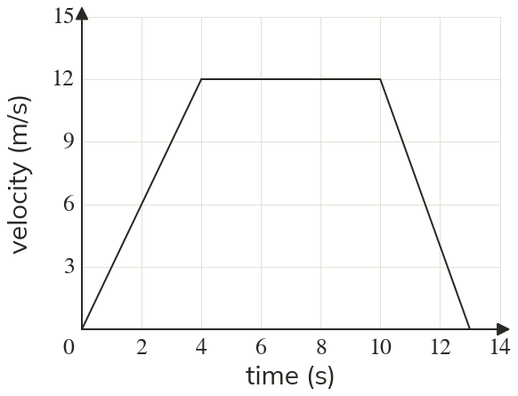

Westonbirt Maths · Distance-Time and Conversion Graphs
Velocity-Time Graphs
Name: ______________________ Date: ____________
1
Describe the motion in each stage.
2
A velocity-time graph is horizontal at m/s from to seconds. Describe the motion.
3
A line runs from to in seconds and m/s. Describe the motion.
4
In question in which stage does the velocity change fastest?
5
Tom says a horizontal line on a velocity-time graph means the car has stopped. Is he right?
Ext
Find the total distance travelled in question
